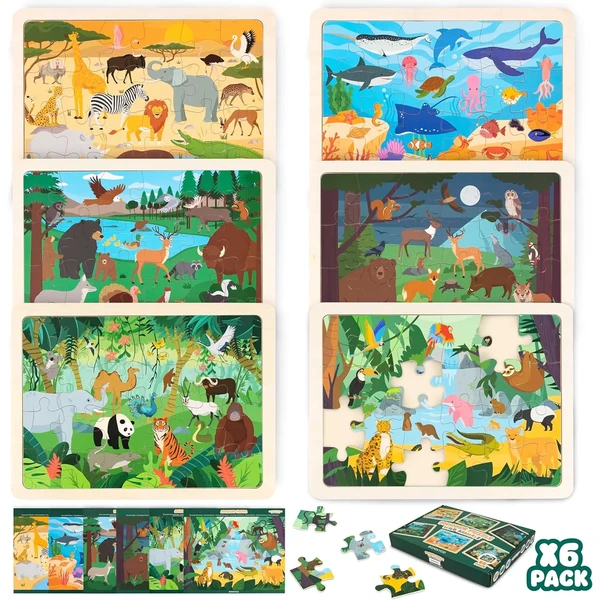
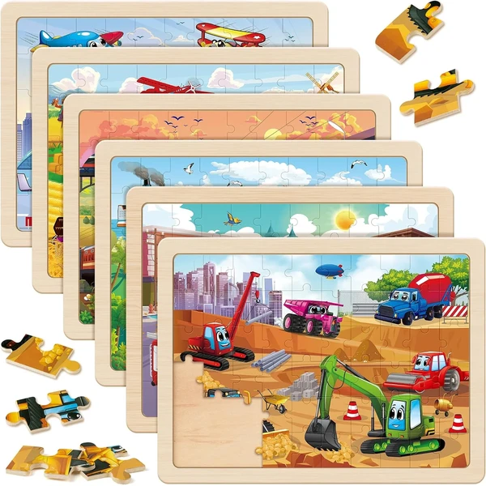
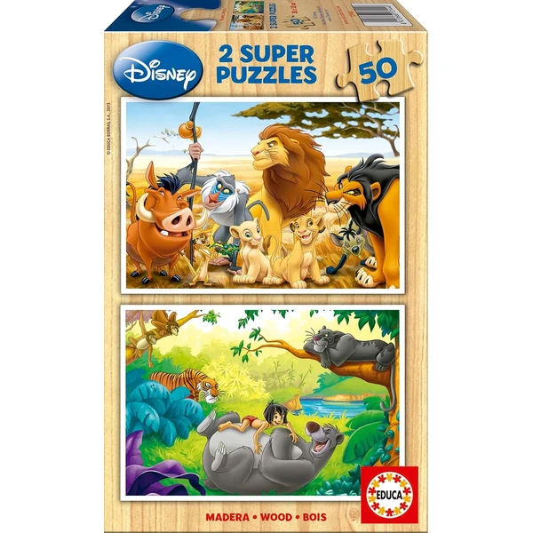
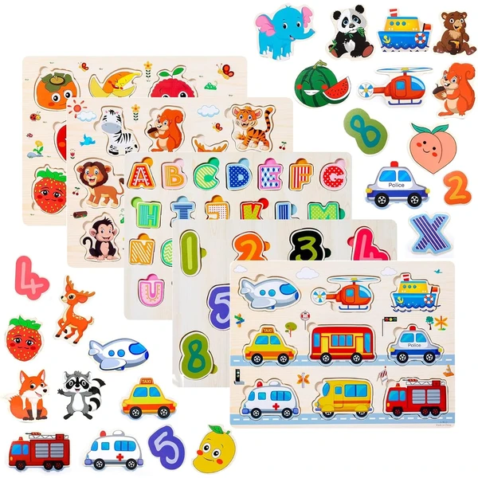

Los puzzles de madera son la opción preferida cuando se busca un regalo duradero: resisten mucho mejor el paso de los años que el cartón, son aptos desde edades muy tempranas gracias a sus piezas grandes y redondeadas, y suelen fabricarse con materiales más sostenibles. No es casualidad que sean también los puzzles favoritos en pedagogía Montessori para los primeros años de vida.
Acabado en madera maciza, piezas resistentes y diseño pensado para durar varias generaciones de uso.

Bonnyco Ver en Amazon →Otras opciones destacadas dentro de este material:

Synarri Ver en Amazon → Jojoin
Ver en Amazon →
Jojoin
Ver en Amazon →

Rey Leon Ver en Amazon →Para los más pequeños (a partir de 1 año), los puzzles de madera con piezas de encaje individuales son ideales para trabajar la motricidad fina y la coordinación mano-ojo, siguiendo el enfoque Montessori de aprendizaje a través del juego autónomo.
Piezas de encaje individuales de gran tamaño, con pomo para facilitar el agarre desde el primer año.

Purpledi Ver en Amazon → Nene Toys
Ver en Amazon →
Nene Toys
Ver en Amazon →
Cubos, esferas, estrellas, pirámides y cruces son los diseños más habituales dentro de esta variante, pensada tanto para el aprendizaje de formas básicas como para decoración infantil. Suelen combinarse con colores vivos para reforzar también el reconocimiento cromático.
Jirafas, elefantes y mariposas son algunos de los diseños más buscados en madera. Si te interesa esta temática en más detalle —incluyendo opciones también en cartón—, consulta nuestra guía de puzzles de animales.
Letras, números, abecedario y mapamundi son los formatos educativos más habituales en este material, gracias a su resistencia frente al uso diario en el aula o en casa. Repasamos todas las opciones —también en otros materiales— en nuestra guía de puzzles educativos.
Algunos puzzles de madera, especialmente los de tipo "puzzle chino" o los rompecabezas de piezas irregulares, tienen fama de ser complicados de resolver. Algunos trucos que funcionan bien en este tipo de formato: